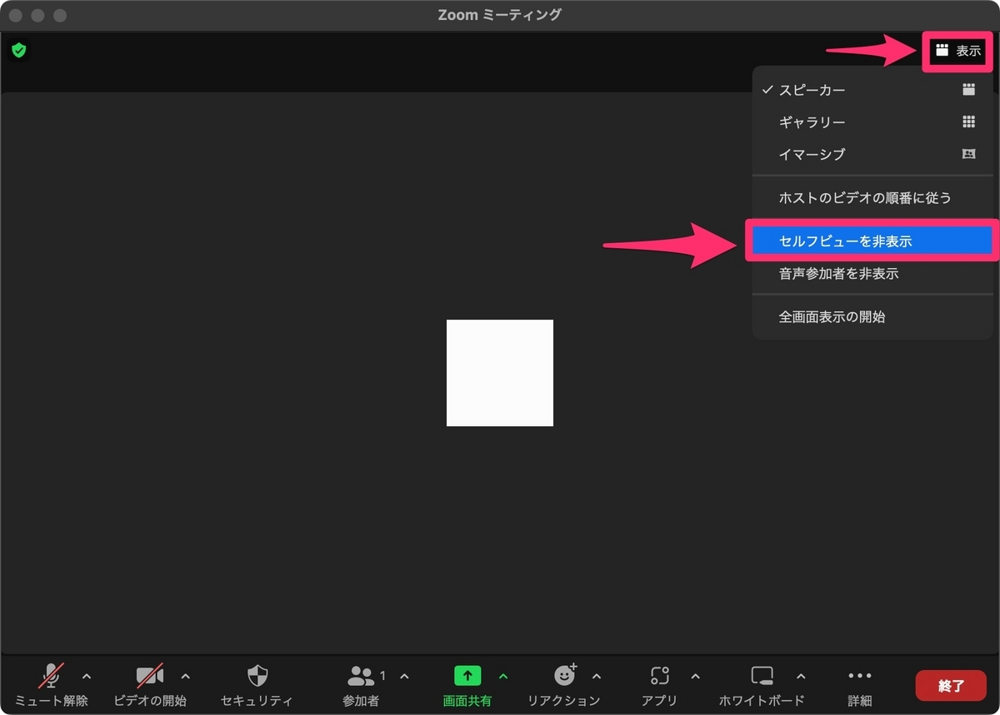
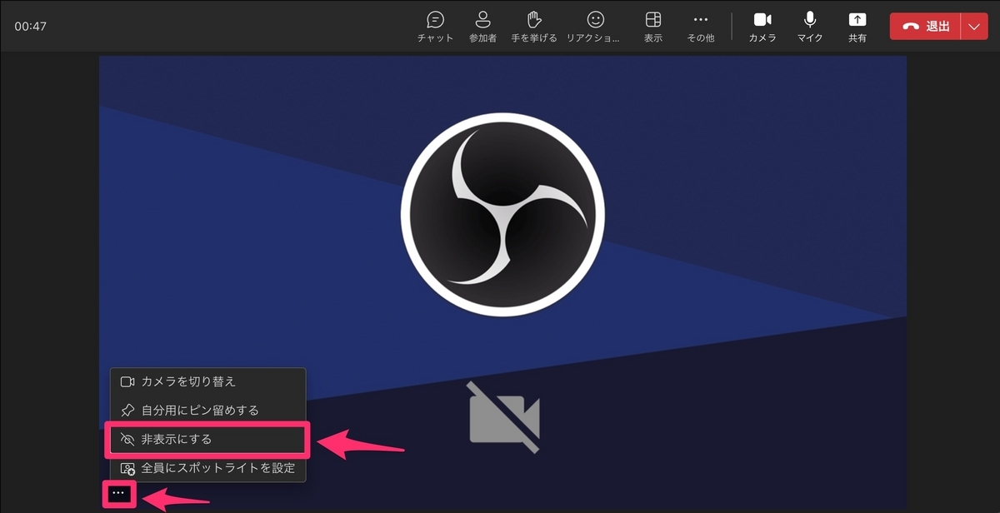
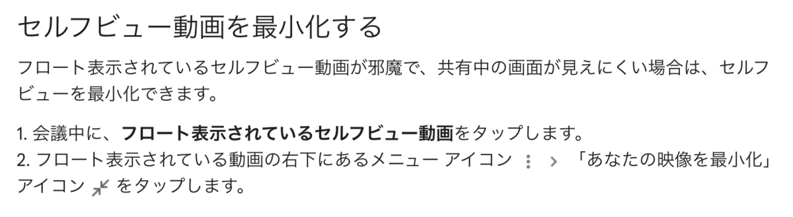

投稿日: 2023/08/27 12:48:27
カテゴリ: リモートワーク
サムネイル: 
意外に簡単で効果的なのだけど、実はできるということを知らない人が多いので記事にしてみることにした。
リモートワークが中心の仕事を2年ほどして、毎日ビデオ会議ばかりしていて、Zoom会議で疲れるのを避けるにはどうしたらいいか探求した結果、「セルフビューを非表示にする」のがかなり効果があると気づいた。
セルフビューというのは自分が映っている映像のこと。日常生活では自分自身を見ながら話すことなんてほとんどないのだけど、Zoomなどで自分自身が見えているとつい見てしまい、疲れるということに気づいた。
ビデオをオフにするのではなく、セルフビューを非表示にするだけで、相手には自分が見えていても気になることはなく、相手は自分の映像が見えるので安心できて会話も弾む。いざ自分の映像の確認が必要なときは設定画面で見たり、オン・オフできるので、だいぶビデオ会議ライフが快適になる。
ただ難点としては、セルフビューの表示・非表示の切り替えができるサービスとできないサービスがあるので、できないサービスの場合は自分の映像を小さくするなどの工夫が必要。
Zoom ミーテイングを開始するかそれに参加します。 ミーティング開始時にはスピーカー ビューに自動設定されており、自分のビデオ映像が自分のディスプレイにも表示されます。
自分のビデオ映像にカーソルを合わせ、ビデオ内の省略ボタン をクリックすると、メニューが表示されます。そこで [ セルフビューを非表示にする] を選択します。 自分のビデオ映像が、自分には表示されなくなりますが、ほかのミーティング参加者には引き続き表示されます。

Teams会議中に自分の映像を見たくない – Livestyleクラウドサービス
1．カメラがオンになっていると右下に自分の映像が表示されます。
2．①自分の映像の上にカーソルを移動し①【…】をクリックし、②【非表示にする】をクリックします。
Google Meet で参加者を表示する方法について - Android - Google Meet ヘルプ

これだけで本当にビデオ会議疲れがグンと減るので、ぜひお試しあれ。良いリモートワークライフを！
自分が書いた記事ではないですが、関連する有益な記事があったので貼っておきます。